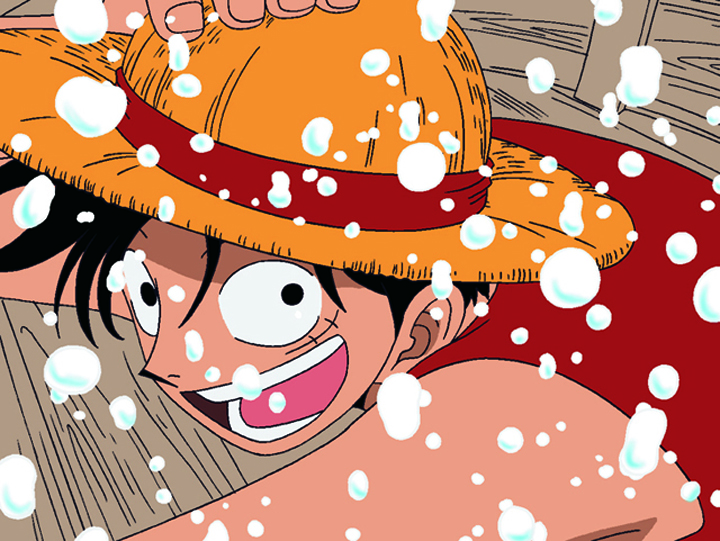
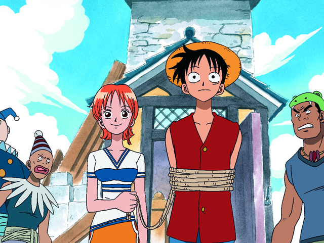
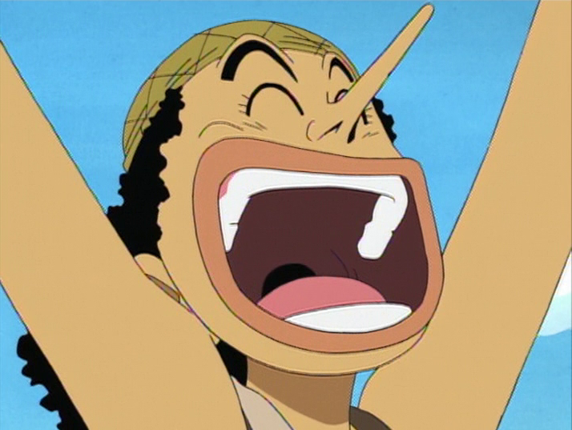
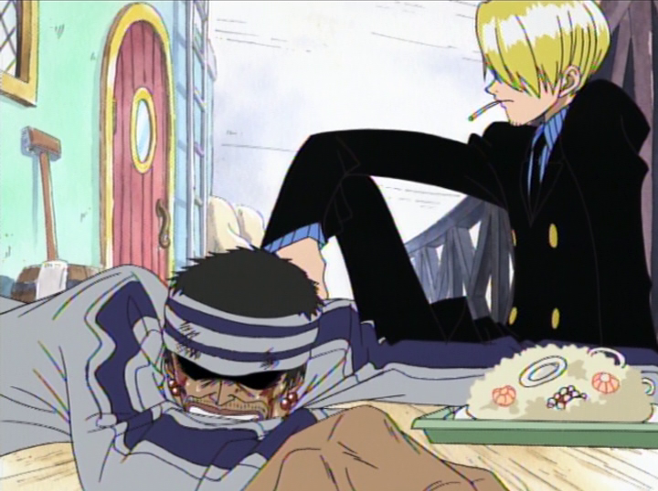
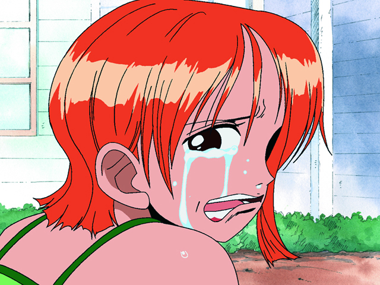
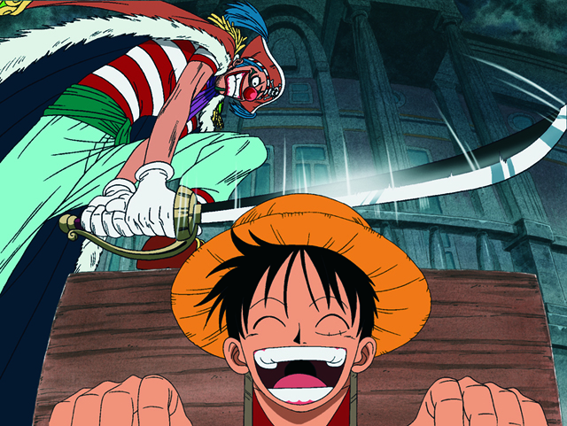

東の海編
ROMANCE DAWN
 東の海の小さな港村・フ－シャ村に住む少年、モンキー・Ｄ・ルフィは、村に滞在していた海賊、〝赤髪のシャンクス〟と親しくなり、海賊への憧れを募らせていく。ところがルフィはシャンクスが敵の船から奪った〝悪魔の実〟を食べてしまい、一生泳げない体質になる代わりに、全身がゴムのように伸びる〝ゴム人間〟となる。
ある日、シャンクスと敵対する山賊の怒りを買い、囚われの身となったルフィは、海に投げ込まれてしまう。海獣に襲われ、危ないところをシャンクスに救われるも、その代償は大きく、シャンクスは片腕を失ってしまう。
海賊たちが村を去る日、シャンクスから麦わら帽子を託されたルフィは、一人前の海賊となり、再会することを約束する。
そして10年後、ルフィは海賊王を目指し、一人航海に出る。
ゾロ登場
タルに入って遭難していたところを、女海賊〝金棒のアルビダ〟の雑用係・コビーに拾われたルフィ。己の夢のためなら死をも恐れない。そんなルフィの覚悟を目の当たりにしたコビーは、自分も「海軍に入る」という夢を実現させようと、勇気を奮い起こしてルフィと共にアルビダに立ち向かう。
コビーから賞金稼ぎ〝海賊狩りのゾロ〟の話を聞き、興味を持ったルフィは、彼が囚われている海軍基地へと向かう。ゾロが「傍若無人な海軍大佐の息子から女の子を助けたため」に捕まったと知り、仲間にすることを決めるルフィ。
そしてゾロを救い出すため、基地を支配する海軍大佐〝斧手のモーガン〟に戦いを挑む。一方ゾロも、「世界一の剣豪になる」という夢のため、ルフィの仲間となることを承諾する。
モーガンを倒し、海兵たちをその支配から解放したルフィとゾロ。二人は海軍に入隊が決まったコビーと別れ、〝偉大なる航路（グランドライン）〟を目指す。
ナミ登場
 航海中、巨大な鳥に連れ去られたルフィは、たどり着いた町で〝海賊専門の泥棒〟を名乗る少女ナミと出会う。ナミが航海術を持っていると知ったルフィは、さっそく彼女を仲間に誘うが、にべもなく断られてしまう。
海賊〝道化のバギー〟から〝偉大なる航路〟の海図を盗み、追われていたナミは、ルフィを盗んだ犯人に仕立て上げ、バギーに取り入ろうとする。だがルフィを殺せという命令を拒否し、一転大ピンチに。そこにゾロが駆けつけ、ルフィ達は無事逃げ出すことに成功する。
その後、一味の非道ぶりを目にしたルフィは、バギー海賊団との対決を決意。〝バラバラの実〟の能力者であるバギーのトリッキーな戦いぶりに翻弄されるルフィだったが、最後はナミと力を合わせ、見事これを撃退する。戦いの後も仲間になるのを頑なに拒否するナミだったが、ひとまず手を組むという形でルフィ達と行動を共にすることに。
ウソップ登場
 さらなる強力な船を求めて立ち寄った村で、ルフィ達は〝誇り高きウソつき〟ウソップと知り合う。ウソップから村一番の富豪・カヤの存在を聞いたルフィは、彼女に船をもらえるよう頼みに行くが、執事のクラハドールに追い払われてしまう。
だがこのクラハドールが、実は悪名高き海賊〝キャプテン・クロ〟であったことが判明。クロがカヤの暗殺計画を企てていることを知ったルフィたちは、計画を阻止しようと立ち上がる。戦いの後、カヤから礼として新たな船〝ゴーイング・メリー号〟を贈られたルフィ達は、ウソップを新たな仲間に加え、村を後にする。
サンジ登場
 海のコック探しのため、海上レストラン〝バラティエ〟に立ち寄ったルフィ達。と、そこへ〝東の海の覇者〟として知られる海賊、首領・クリ－クの部下・ギンが、飢えて弱りはてた姿で現れる。店のコックたちが無一文のギンを客扱いしない中、副料理長のサンジは彼に食事を与える。その様子を見たルフィはサンジを気に入り仲間に誘うが、「店を離れるわけにはいかない」と断られてしまう。
その直後、クリークがバラティエに現れ、「この船をもらう」と宣言。加えて料理長のゼフが、かつて〝偉大なる航路〟から生還した海賊、〝赫足のゼフ〟だと知るや、その航海日誌を渡すよう迫る。
店内が騒然とする中、王下七武海の一人、〝鷹の目のミホーク〟が姿を見せる。ミホ－クに一騎打ちを挑むゾロだったが、圧倒的な実力差を見せつけられ敗北。深手を負ってしまう。さらにナミが船ごと宝を持ち去り、姿を消してしまい…。それを知ったルフィ達は二手に別れることにし、ウソップはゾロを連れてナミを追跡、ルフィはひとりバラティエに残る。
激闘の末、クリークを倒したルフィ。戦いの中でルフィの〝死を恐れぬ信念〟を目の当たりにしたサンジは、ゼフや仲間のコック達に背中を押され、ルフィの船に乗ることを決める。
アーロンパーク
 ゾロとウソップはナミを追いかけて、とある島にたどり着く。その島は、魚人の海賊〝ノコギリのアーロン〟とその一味によって支配されていた。そこでウソップ達は、ナミがアーロン一味の幹部だという衝撃の事実を知る。
ルフィとサンジも一足遅れて島に到着。ナミと再会を果たすも、ナミは自分を〝仲間〟と呼ぶルフィに対し、〝近づいたのは金のため〟と言い放つ。その後、ルフィ達はナミの義姉ノジコから真実を聞かされる。義母ベルメールをアーロンに殺されたナミは、生まれ育ったココヤシ村の人々を守るため、仇であるアーロン一味に身をおいていたのだ。
だがその直後、ナミが村のために隠していた金が、アーロンと結託した海軍によって奪われてしまう。アーロンが自分との約束を守る気が無かったと知り、絶望するナミ。そのナミの心の叫びを聞いたルフィ達は、アーロンの根城〝アーロンパーク〟へと殴り込む。
ウソップ、ゾロ、サンジがアーロン一味の幹部達を次々と撃破。そしてルフィの怒りの一撃がアーロンパークごとアーロンを打ち倒し、戦いは麦わらの一味の勝利で幕を閉じた。こうしてアーロンの呪縛から解放されたナミは、ルフィの真の〝仲間〟となった。
伝説は始まった
 バギー、クリーク、アーロンといった東の海の荒くれ者達を倒したことで、３千万ベリーの賞金首となったルフィ。晴れて〝お尋ね者〟となった麦わらの一味は、〝始まりと終わりの町〟ローグタウンに立ち寄る。ここはかつて海賊王ゴール・Ｄ・ロジャーが処刑された町として知られていた。
分かれて町を楽しむ一味の面々。その最中、ルフィは復讐に燃えるバギーに捕まり、公開処刑にかけられてしまう。死を覚悟するルフィだったが、処刑のその瞬間、バギーが振り下ろした刀に雷が落ち、九死に一生を得る。
自由の身となったルフィは、駆け付けたゾロ、サンジと共に町からの脱出を図る。海軍本部大佐のスモーカーがその行く手に立ちふさがるが、謎の男ドラゴンの加勢により、港へとたどり着く。無事出航を果たした麦わらの一味は、それぞれの夢を掲げ、〝偉大なる航路〟にその一歩を踏み出す。